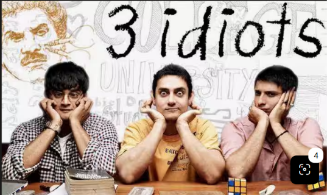

A Comedy Movie released in 2009
About | Cast | Songs | Review
3 Idiots follows two friends on a road trip to find their missing companion Rancho, recalling their college days together as they challenged rigid academic norms.
The film mixes humor, warmth, and reflection, exploring friendship, passion, and creative thinking over rote success. Acclaimed for its relatable themes, stellar performances, and cultural impact, it became a global box-office hit and award-winner, making it a highly recommended watch.
National Film Award for Best Popular Film Providing Wholesome Entertainment
Example: Released year is 2009 AD
3 Idiots is a 2009 Hindi coming‑of‑age comedy‑drama about three engineering students whose friendship and experiences challenge India’s rigid education system.
Listen to audio file